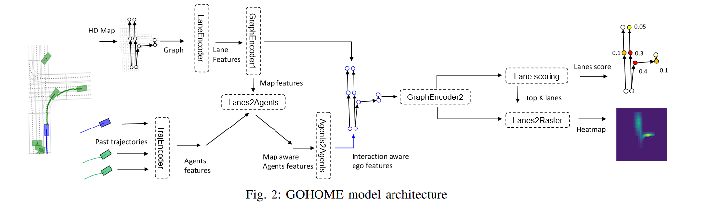
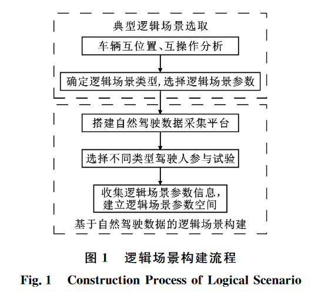

自动驾驶相关论文阅读
这是关于换方向之前对自动驾驶论文的一些阅读和理解
现在看大模型了
（所有论文的实现细节还得看代码）
[TOC]
（还得关注一下损失函数，这个很重要）
动机感觉像是你写论文的目的，你要解决的问题，也有发现过去方法的问题；而论文的创新点往往有和过去的方法有对比。
根据网上的一些资料，论文的动机是指你为什么要做这个研究，你想要解决什么问题，你的研究有什么意义和价值。论文的创新点是指你的研究有什么不同于其他同类作品并且具备原创性的特点，是在前人的基础上乃至于高于前人的研究上得出的一种独到观点。
论文的动机和创新点之间有一定的联系，但也有区别。动机是写作论文的出发点和目标，创新点是写作论文的成果和亮点。动机可以激发你进行研究，创新点可以展示你进行研究的水平和贡献。
快速阅读（轨迹预测，场景上下文提取，评价）
1、CoverNet: Multimodal Behavior Prediction using Trajectory Sets （CVPR 2020）
本篇文章的模型细节没有详细说明
我们现在总结一下我们在使用 CoverNet 进行多模态概率轨迹预测方面的主要贡献：
• 介绍用于多模态轨迹预测的轨迹集的概念，并展示如何以固定和动态方式生成它们；
• 在 nuScenes [5] 上比较最先进的方法，nuScenes [5] 是一个公共的、真实世界的城市驾驶基准；
• 凭经验显示轨迹集分类优于多模态回归。
论文将轨迹预测问题转化为对不同轨迹集合的分类问题。
- 这里的分类是利用softmax对我们事先生成的轨迹（本篇文章相当于是对control进行评分，没有直接利用模型去进行回归，而是利用模型去进行分类（评分），真实值是真实的轨迹，用的损失也是MTP）进行评分。
- 我认为multipath像是一种分类+回归，只不过multipath中还有偏移回归等，以及固定的anchor。
- 轨迹回归是类似于MTP那篇文章的方法，直接输出轨迹。
（但这个轨迹的生成好像没有考虑到场景交互，车与车之间的交互，这些交互信息被用于评分那一块去了和MTP文章有些出入。）
本篇文章并不复杂，这里的的特征提取器和MTP那篇文章中的一样。我认为这篇文章主要是对标的是Multipath
在论文TNT中有这样一段描述：
- 最近，Multi Path [ 33 ]和Cover Net [ 34 ]选择将轨迹量化为锚点，其中轨迹预测任务被改写为锚点选择和偏移回归（offset regression）。
锚点要么预先聚类成固定的先验集合[ 33 ]（multipath），要么基于运动学启发式[ 34 ]动态获取（covernet）。
论文提除了两个见解：
- 在合理的额时间范围内，可采取的不同行动相对较少。
- 稀疏
- 预测的轨迹应该与当前的动态状态保持一致。
- 动态
论文中对fixed和dynamic做出了解释：这里也有方法
- fixed：如果轨迹集包含的轨迹不随代理当前动态状态或环境的变化而变化，我们认为轨迹集是固定的。
- 这里和Multipath一样，是基于真实轨迹这个先验得到的，而没有考虑当前的状态。
- dynamic：如果轨迹集包含的轨迹随着代理当前动态状态的变化而变化，我们认为轨迹集是动态的。
- 论文受运动学的启发，采用的是标准车辆到你管理学模型。
- 同时动力学模型、控制序列和当前状态通过forward integration确定轨迹 st:t+N
- 我们通过在不同的控制序列上与我们的动态模型向前集成，基于当前状态 st 创建动态轨迹集 K。
- 对于相同的覆盖范围，这样的动态轨迹集有可能比固定集更稀疏，因为每个控制序列映射到多个轨迹（作为当前状态的函数）
- 论文通过预测范围内的一组不同的恒定横向和纵向加速度来参数化控制（输出空间）（这里作为anchor）。（每一个控制里面的纵向横向加速度是恒定的，也就是说再接下来的一小段时间内是不变的（然后用前向推理去计算未来的状态，根据标准车辆动力学模型）（？？？？，暂时不确定））
- 这里的anchor相当于变成了control序列
- 混合：请注意，与固定轨迹的情况不同，dynamic profile的合成性质可能无法保证 100% 覆盖。（也就是说动态的控制序列没法覆盖所有情况，因此采用动静结合的方式）
- 利用静态中的子采样轨迹和动态中的anchor结合起来，再去子采样（prune）
- 保证对空间的足够的覆盖
2、智能汽车预期功能安全保障关键技术（个人认为偏科普，全面介绍了SOTIF歌歌模块的）
预期功能安全（SOTIF）保障
由于性能局限、规范不足或可合理预见误用导致的预期功能安全问题层出不穷，严重阻碍了智能汽车 的快速发展。本综述聚焦智能汽车预期功能安全保障关键技术，分别从系统开发、功能改进和运行 3 个阶段进行了 系统的总结，最后从基础理论、风险防护和更新机制 3 方面进行了展望
- SOTIF问题：1、汽车系统复杂化，2、汽车智能化程度日益提升，3、运行环境的开放性和挑战性不断增加，4、感知和决策等功能不足
预期功能安全旨在避免由于预期功能或其实现 的功能不足导致危害所产生的不合理风险
SOTIF 研究涉及系统功能设 计改进、分析评估、验证确认和认证等多方面问题， 且随着技术发展和新技术的引入不断提出新的需求
UL 4600［4］旨在补充功能安全和SOTIF标准，提出一种面向安全目标的方法，专注于 “如何评估”全自动驾驶安全情况。
现有SOTIF研究的不足，该领域还并未形成完善的技术研究体系：1、研究总量相对较少，2、缺少对SOTIF保障关键技术系统性的研究和梳理，3、有许多高水平研究成果对于解决功能不足问题具有重要的启发和借鉴意义，但尚未被明确纳入SOTIF保障技术研究范畴。
SOTIF问题：1、车辆层对预期功能的规范不足，2、预期功能实现的不足，3、同时SOTIF危害的产生和演化依赖于特定的场景。因此，在进行SOTIF保障过程中需要综合系统自身的局限和运行场景风险以建立安全保障体系。
SOTIF保障目标的实现可分解为将未知转化为已知，将不安全转化为安全两个方面。
- 开发阶段 SOTIF 保障关键技术“：SOTIF 分析评估、验证确认、功能改进和发布
- 智能汽车功能改进关键技术：从感知定位、决策控制、合理可预见误用处理和整 车层功能改进
- 运行阶段SOTIF保障关键技术：短期风险防护和长期功能

本文从 SOTIF 问题本质出发，通过对智能 汽车系统开发和运行阶段的 SOTIF 保障关键技术以 及针对系统各模块、合理可预见误用和整车层功能 改进技术的综述，梳理了 SOTIF 保障技术体系并提 出了研究展望，从而助力智能汽车 SOTIF 的技术研 究和产业落地。
场景上下文提取，Scene context modeling,GNN
1、VectorNet：Encoding HD Maps and Agent Dynamics from Vectorized Representation(CVPR 2020)（也涉及到了轨迹预测，主要是表征）
自动驾驶的一个复杂性，且这是一个动态的多智能体的系统。
核心的兴趣是找到一个统一的表示，它将感知系统(如目标检测和跟踪)获得的动态智能体与场景上下文结合起来，（这里是场景上下文吧）通常以高清地图的形式作为先验知识提供。利用了HD map，高清地图。论文的目标是建立一个系统，学习预测车辆的意图，这些车辆被参数化为轨迹。
动机：能否直接从结构化的高清地图中学习到有意义的语境表征?同时还收自监督学习方法的影响，提出了一种随机掩码的方式来增强自己的学习能力。
方法：1、折线化向量化表示：文章将道路的特征如人行横道，交叉路口等以及车辆建模成polylines（折线）。所有这些折线然后可以表示为向量的集合。
2、层次图神经网络：hierarchical graph network VectorNet：使用了图神经网络来合并这些向量集，将每个向量视为图中的一个节点，并将节点特征设置为每个向量的起始位置和终止位置，以及其他属性如折线组id和语义标签。来自HD地图的上下文信息以及其他移动智能体的轨迹通过GNN传播到目标智能体节点。
这里的图还是无向全连接图（无向完全图）
分层图网络，它聚合了来自单个多段线的局部信息，然后全局地覆盖所有轨迹和地图特征。
为了学习 GNN 的竞争表示，我们观察到根据节点的空间和语义接近度来约束图的连通性很重要。因此，我们提出了一种层次图架构，其中属于具有相同语义标签的相同折线的向量被连接并嵌入到折线特征中，然后所有折线相互完全连接以交换信息。为了利用节点的空间和语义局部性，我们采用分层方法，首先在向量级别构造子图，其中属于同一折线的所有向量节点相互连接。
- 作者观察到基于节点的空间和语义邻近性来约束图的连通性是很重要的。
- 其中，属于具有相同语义标签的同一折线的向量被连接并嵌入到折线特征中（局部图）（提取节点的相关信息）
- 然后，所有的多线之间完全连接以交换信息（全局图）（交互？）（高阶交互的全局图）
- 这里采用的是自注意力机制，自注意力机制类似于一个全连通的图？？
- 我们用多层感知器实现局部图，用自注意力实现全局图[ 30 ]。我们的方法的概述如图2所示。
3、自监督学习：node completion auxiliary task.：除了行为预测目标，我们还提出了一个辅助的图补全目标。更具体地说，我们随机掩码了属于场景上下文或代理轨迹的输入节点特征，并要求模型重建被掩盖的特征。直觉是鼓励图网络更好地捕捉智能体动态和场景上下文之间的交互。
此时的轨迹还是单模态的，看论文总结最后一句话：A natural next step is to incorporate the VectorNet encoder with a multi-modal trajectory decoder (e.g. [6, 29]) to generate diverse future trajectories.（一个自然的下一步是将VectorNet编码器与多模态轨迹解码器( e.g. [ 6,29 ])相结合，以生成多样化的未来轨迹。）。下面就是TNT等论文了。
他的输出也是一个多模态的，而不是一个确定的值。（从损失函数：负对数高斯似然）
为了使输入节点特征对目标agent的位置保持不变，我们将所有向量的坐标归一化到目标agent在其最后一个观测时间步的位置。
（但论文中好像没有区分哪个是target智能体，难道是说有一个target，但可以预测所有的移动智能体的轨迹？）
也是预测目标车辆的轨迹，从论文的公式来看，这个既可以用于单个智能体的轨迹生成，也可以用于多个智能体的轨迹生成
想法
我们可不可以考虑另外一种交互模式，就是agent和agent之间建模，agent与环境之间建模，然后在考虑总体
vectornet 在Dense TNT被称为稀疏化编码
（文章关于图是如何构建的并没有说的很清楚。这里的图可能是无向图。具体还要看看代码）
2、STGCN（IJCAI 2018）
本篇文章是用于交通流量预测方向的。
本文章是交通研究中首次应用纯卷积结构从图结构时间序列(graph-structured time series)中同时提取时空特征。
由于交通流的高度非线性和复杂性，传统方法无法满足中长期预测任务的要求，往往忽略了时空依赖性。
本文提出了一种新的深度学习框架- -时空图卷积网络( STGCN )来解决交通领域的时间序列预测问题。
我们不使用常规的卷积和循环单元，而是将问题建模在图上，构建具有完整卷积结构的模型，从而以更少的参数获得更快的训练速度。
STGCN
-
对于交通网络结构的特征（空间特征提取）采用的是图卷积神经网络
-
交通网络一般以图结构组织。将道路网用数学上的图形表示是自然合理的。然而，以往的研究忽略了交通网络的空间属性：由于交通网络被分割成多个片段或网格，网络的连通性和全局性被忽视。即使在网格上进行二维卷积，由于数据建模的妥协，也只能粗略地捕捉空间局部性。因此**，在我们的模型中，图卷积被直接用于图结构数据，以提取空间域中具有高度意义的模式和特征。**
-
由于直接用GCN的话计算量比较大，本文采用的应该是 切比雪夫多项式近似。将线性复杂度从
-
过去的图信号是向量的，现在可以扩展到矩阵，也就是说图中每个节点的信号值不再是一个标量，而是一个向量，我们可以记通道数为
-
-
对于时间序列上的特征提取采用的是时间门控卷积
-
尽管基于RNN的模型在时间序列分析中变得广泛，但用于流量预测的循环网络仍然存在迭代耗时、门机制复杂和对动态变化响应缓慢等问题。相反，卷积神经网络具有训练速度快、结构简单、对前几步没有依赖约束等优点。受[格林等, 2017]的启发，我们在时间轴上使用全卷积结构来捕捉交通流的时间动态行为。这种特定的设计允许通过作为分层表示形成的多层卷积结构进行并行和可控的训练过程。
-
一维因果卷积+线性门控单元
- 值得一点注意的是，这里所描述的因果卷积好像没有填充（还得看代码）
- 残差连接作用在堆叠时间卷积层之间
-
-
融合特征：三明治结构（sandwich）：时空时
中间的空间层是桥接两个时间层，通过时间卷积可以实现图卷积的快速空间状态传播- "三明治"结构还帮助网络充分应用瓶颈策略，通过图卷积层对通道C进行降尺度和升尺度操作，实现尺度压缩和特征压缩。此外，在每个ST - Conv块内使用层归一化以防止过拟合。
-
模型输出：附加了一个额外的时间卷积层和一个全连接层作为输出层。
下面我们总结我们的模型STGCN的主要特征。
- STGCN是处理结构化时间序列的通用框架。它不仅能够处理交通网络建模和预测问题，而且能够应用于更一般的时空序列学习任务。
- 时空块结合了图卷积和门控时间卷积，能够提取最有用的空间特征，同时连贯地捕获最本质的时间特征。
- 该模型完全由卷积结构组成，因此以更少的参数和更快的训练速度实现了对输入的并行化。更重要的是，这种经济架构使得模型能够以更高的效率处理大规模网络。
3、SCALE-Net: Scalable Vehicle Trajectory Prediction Network under Random Number of Interacting Vehicles via Edge-enhanced Graph Convolutional Neural Network（IROS，2020）
每一个时间点都预测一张EGCN，然后进入一个LSTM
顺序编码

该方法是针对==每个时间点（帧）==都构重新对交通场景建模进行图形化建模。
（预测除ego车辆外的周围车辆，多智能体同时预测）
在随机变化的交通水平下预测周围车辆的未来轨迹是开发自动驾驶汽车最具挑战性的问题之一。
scalable：模型可以独立于所考虑的车辆总数进行操作。
特别地，我们的模型可以刻画如下First, the edge feature matrix has to be normalized vehicle-wisely in advance.
- Fully scalable future prediction model
- SCALE - Net是一个完全可扩展的可用车辆数模型。换句话说，该模型是完全灵活的，可以处理各种驾驶情况下的随机交通水平。
- Explicitly embedded the natures of interaction
- 所提出的框架通过利用EGCN-LSTM交互嵌入层，可以内在地模仿车辆间交互的本质。
EGCN操作有两个步骤，一个是边增强的注意机制，另一个是基于图卷积神经网络的信息更新。
- 为了更新特定车辆的上下文，首先需要计算目标车辆周围每辆车的重要性权重。即使在实际的驾驶情境中，在制定驾驶策略时，考虑到车辆的相对状态，与其他车辆相比，可能存在更多的冲突车辆。因此，为了内在地模仿这一特性，我们提出了一种边增强注意力机制。
边增强注意力机制的目标是生成加权邻接矩阵，邻接矩阵定义了具有连接强度的交互对的连通性。- 这里是得到加权邻接矩阵。
- 利用节点特征矩阵和加权邻接矩阵，通过图卷积操作，多个交互对的影响同时在整个交通场景中传播。
由于单个交互效应对多车辆情况的近邻聚合，使得操作不受车辆总数的影响，实现了完全可扩展的模型。在提出的基于EGCN的交互嵌入架构中，隐藏矩阵由每个车辆的隐藏状态组成；
周围车辆的时间序列未来位置是由传统的基于LSTM的seq2seq编码器-解码器模型产生的，该模型接受交互嵌入的隐藏矩阵HL作为其输入基础。通过LSTM编码器对车辆间的互动进行顺序编码，可以考虑时间变化的互动。
在轨迹预测器中，为了使多个车辆的状态标准化，以实现模型的通用性，每个周围的车辆都被放在自己的坐标系中。因此，在整个方案中，每辆车的坐标系的原点被放在每辆车的初始位置上。利用坐标转换操作后，节点特征矩阵的每一行都被重新定义，形成车辆坐标下的车辆状态矩阵S，其中Si是车辆i在车辆i坐标上的状态。
在提出的轨迹预测器中，使用了具有LSTM编码器-解码器结构的序列-序列（seq2seq）模型。LSTM编码器的主要功能是对交互和车辆状态的顺序信息进行编码。LSTM解码器作为每个周围车辆的未来位置生成器，考虑到驾驶场景对每个车辆明确的嵌入式交互影响。
为了同时考虑个人的操纵信息和交互信息，首先，LSTM编码器的输入矢量是由S（S有一个状态）和之间的连接操作建立的。最后，通过LSTM编码器-解码器模型生成车辆i的时间序列未来位置。在本文中，历史时间跨度、预测时间跨度和相邻时间步骤之间的时间间隔分别被指定为3.5秒、4秒和0.5秒。
SCALE-Net采用了EGNN这种模型， 对于每个时刻，每个车为一个节点，节点状态为（x坐标、y坐标、x方向速度、y方向速度和倾角）， 而节点间的边大体按照表示（当然还有很多细节处理问题），呈现出多维的状态。建好的图就用多层的EGNN算法计算即可。下一个时刻，图模型又会重新建造，EGNN重新运行，每次EGNN最后一层的输出交给序列模型处理。
其中EGCN中所提到的给不同的边注意力也是值得考虑的。给不同节点不同的关注，给不同的交互不同的交互力度
如何对交通场景进行graph建模文章没有细说
4、laneGCN （ECCV2020）
多智能体预测，多模态预测
强调了车道（场景）对motion predicted预测 的重要性，显式建模车道拓扑特征（之前的栅格化一般是隐式建模）
论文提出了一种新的运动预测模型（motion forecasting model）利用一种新颖的结构化地图表示以及actor-地图交互
与将矢量化地图编码为栅格图像不同，我们从原始(raw)地图数据中构**建车道线图（lane graph）**来显式地保留地图结构。
- 为了捕获车道图的复杂拓扑和长距离依赖关系，我们提出了LaneGCN，它扩展了具有多个邻接矩阵和沿车道扩张的图卷积。
- 为了捕获actors和地图之间的复杂交互，我们开发了一个由四种类型的交互组成的融合网络，actors到车道，车道到车道，车道到actors和actors到actors（actor-to-lane, lane-to-lane, laneto-actor and actor-to-actor）。
整个模型由四块构成：
- how to compute actor features with ActorNet
- how to represent the map via MapNet
- how to fuse the information from both actors and the map with FusionNet
- finally how to predict the final motion forecasting trajectories through the Prediction Header
其中laneGCN在MapNet模块中，运用了四个邻接矩阵处理了四个不同的车道间的连接方式。同时还采用了不同跳（不同的幂次方）的GCN操作，用于获取：更大的感受野和多尺度拓扑特征
这里的FusionNet也比较神奇：构建了一个由4个融合模块组成的stack，以捕获actors和车道节点之间的所有信息流，即actors到车道( A2L )、车道到车道( L2L )、车道到actors( L2A )和actors到actors( A2A )。
- A2L为车道节点引入实时的交通信息，例如车道的堵塞或使用情况。
- L2L通过在车道图上传播交通信息来更新车道节点特征。
- L2A将更新后的地图特征与实时交通信息融合返回给actors。
- A2A处理actors之间的交互，产生输出的actors特征，然后由预测头用于运动预测。
5、laneRCNN（IROS 2021）
多智能体预测，多模态预测（和LaneGCN一样）
这是极具挑战性的，因为acotrs有潜在的意图，他们的轨迹受到其他acotrs、他们自己、和地图之间复杂的相互作用的控制。
本文提出了一种**以图为中心（graph centric）**的运动预测模型LaneRCNN。
本篇文章中最大的特色就是LaneRoI：a local lane graph representation per actor
- 过去的方法利用一个向量去描述与一个actor相关的所有信息。如：
将每个actor过去的动作和周围的地图(或其他上下文信息)编码成一个特征向量，通过将二维光栅化输入卷积神经网络( CNN )，或者直接使用循环神经网络( RNN )计算 - 但本文中用一个局部的图来表示一个actor的状态。
method
-
LaneRoI representation
- 这是针对每个actor中的，laneRoI中的每个节点都是相对应的actor中的车道段节点
- 对于场景中的每个actor i，我们首先检索该actor在预测范围 T 中可能去的所有相关车道，以及在观察到的历史范围 L 中来自的所有相关车道。（go to and come from）
- LaneRoI中车道图中的每个节点对于一段道路，还有一个嵌入来表示其几何（中心，起点坐标及弧度）与语义（是否转弯，红绿灯等）信息，还包含过去的历史轨迹信息
-
Lane Encoder
- Lane Convolution Operator：laneGCN是用来更新每个acotr的LaneRoI值，对每个actor都计算。
- Lane Pooling Operator：这里还不是车与车之间的交互，在看到laneroi encode时这里还是对一个actor中的轨迹点进行编码的。
- LaneRoI Encoder：这里包含了节点更新（用lane GCN）+轨迹特征编码（用lane pooling）
-
LaneRoI Interactor：用于actor之间的交互
-
Map-Relative Outputs Decoding
- 这里和TNT一样并不是直接预测轨迹，而是学习一个offset
- 未来天生是多模态的，行为体可以采取许多不同但可能的未来行动。
- 在这里，目标意味着行动者在预测视域末端的最终位置。注意，行动者大多遵循车道结构，因此他们的目标通常接近于车道段l。
- 对每个actor中LaneRoI中的每个节点都作为未来的endpoint，利用MLP为每个位置输出一个分数，然后输出一个偏移。（这里和目标检测的anchor其实是一致的）。就是车道被用作先验
- 解码器解码的结果式 从轨迹proposal到真实未来位置的残差。
- 这里和 目标检测也有点像
论文中的laneRoI用的比较多
6、ReCoG （有异构图）2020
这篇文章中提到的异构图和平常理解的不太一样，本质上看还是同构图。
预测目标车辆的轨迹
论文开发了 ReCoG（递归卷积和图神经网络），这是一种通用方案，将车辆与基础设施信息的交互表示为异构图，并应用图神经网络（GNN）为轨迹预测的高级交互建模。
图中的节点包含相应的特征，其中车辆节点包含使用递归神经网络 (RNN) 编码的顺序特征，基础设施节点包含使用卷积神经网络 (CNN) 编码的空间特征。（有两种节点：轨迹和基础设施）
然后 ReCoG 通过联合考虑所有特征来预测==目标车辆的未来轨迹==。
论文采用的是encoder-decoder结构：
encoder：它由三个编码器( RNN编码器、CNN编码器、GNN编码器)和一个解码器( RNN解码器)组成。
-
RNN编码器应用于单个车辆的历史状态，
-
CNN编码器应用于局部地图。
-
然后利用GNN编码器提取车辆与道路的交互特征。
-
采用的是 有向异构图
- 其中包含两种节点，车辆节点和地图节点。
-
为了预测目标车辆的未来轨迹，既要考虑其相邻车辆的序列特征，又要考虑其局部地图的空间特征。（这也是构造图所需要的）
- 如果某辆车与目标车辆的距离在 20 米以内，则该车辆被选为目标车辆的邻居。本地地图是一个以目标车辆为中心的 40×40m2 的正方形。
-
为了将交互建模为图，不失一般性，这项工作将 v1 作为目标车辆， 作为地图节点，是邻居车辆。边集合定义为：
其中 ei,j 表示从节点 i 到节点 j 的有向边。车辆的顺序特征和地图特征被放入构造的相应节点中，where features are concatenated with an indicator one-hot vector，车辆节点为[0,1]，道路节点为[1,0]。然后应用 2 层 GNN 来提取车辆和道路之间的高级交互。
-
-
将编码后的特征送入RNN解码器，预测目标车辆的未来轨迹。
decoder：将 RNN 解码器应用于交互特征和目标车辆的序列特征的串联（the concatenation of），以预测其未来轨迹。
7、Vehicle Trajectory Prediction in Connected Environments via Heterogeneous Context-Aware Graph Convolutional Networks （异构图，TITS 2021）
车辆轨迹预测
1、DESIRE: Distant Future Prediction in Dynamic Scenes with Interacting Agents(CVPR 2017)（有点难，框架比较大，可以再好好学学）
旨在解决对于动态场景中多个交互智能体的未来预测任务。通过1 )解释未来预测(也就是说,给定相同的背景,未来可能会有所不同)的多模态性；2 )预见未来的潜在结果并在此基础上做出策略性预测；3 )不仅从过去的运动历史进行推理，而且从场景上下文以及智能体之间的交互进行推理，有效地预测多个场景中物体的未来位置。
**我们将场景建模为由语义元素(例如道路和人行横道)和动态参与者或智能体(例如汽车和行人)组成。**我们将未来预测建模为在未来的不同时刻确定智能体的位置，仅仅依靠对场景过去状态的观察，以基于图像特征或其他感官数据的智能体轨迹和场景上下文的形式。该问题是在最大化预测的潜在未来回报的优化框架中提出的
总共有如下模块：
-
该模型首先利用条件变分自编码器获得一组多样化的假设未来预测样本，并通过以下RNN评分-回归模块对其进行排序和改善
-
通过对未来累积回报的核算，对样本进行评分，这使得类似于 IOC 框架的更好的长期战略决策成为可能。
-
IOC：逆最优控制的简称，这将在整篇论文中进行更多的说明。
-
RNN场景上下文融合模块联合捕获过去的运动历史、语义场景上下文（CNN来捕获）和多个智能体之间的交互。
-
反馈机制迭代排名和完善（refine）以进一步提高预测准确性
未来的预测可能具有内在的模糊性和不确定性，因为在过去相同的情况(例如,一辆驶向交叉口的车辆可以做出不同的转向,如图1所示)下可以解释多个可能的情景。因此，学习一个直接将{ X，I }映射到Y的确定性函数f，会使潜在的预测空间表示不足，容易过度拟合训练数据。（因此这里输出的是个多值的，而且有意思的是，这里是利用隐变量生成不同的假设（然后再对这些假设进行操作，ranking和refine，再决策），不是像social lstm中的直接输出分布的参数）（DESIRE：最大化未来长期奖励，social lstm：最大化后验（或者理解成是采样）概率）
损失函数：
同时该论文对KITTI和Stanford drone dataset这两个数据集的原始数据都有处理。
gpt生成内容：论文 DESIRE：Distant Future Prediction in Dynamic Scenes with Interacting Agents12 是 Namhoon Lee、Wongun Choi、Paul Vernaza、Christopher B. Choy、Philip H.S. 于 2017 年发表的研究论文。 托尔和曼莫汉钱德拉克。 该论文提出了一种新颖的深度学习框架，用于预测动态场景中多个移动物体（例如行人、汽车和自行车）的未来位置。 本文解决了考虑未来结果的不确定性和多样性、推理代理之间的交互以及将场景上下文纳入预测模型的挑战。
该论文介绍了一个CVAE+ Deep Stochastic IOC RNN 编码器-解码器框架 DESIRE，它由四个模块组成：一个条件变分自动编码器 (CVAE) 模块，它根据过去的观察生成未来轨迹的不同样本； 一个 RNN 评分回归模块，根据样本的可能性和奖励对样本进行排名和细化； 一个 RNN 场景上下文融合模块，融合了过去的运动历史、语义场景上下文和代理之间的交互； 以及迭代排序和细化以提高预测准确性的反馈机制。
该论文在两个公开可用的数据集：KITTI 和斯坦福无人机数据集上评估了所提出的模型。 该论文表明，DESIRE 在四个评估指标上优于几种基线方法：平均位移误差 (ADE)、最终位移误差 (FDE)、best-of-N (BoN) 和 min-of-N (MoN)。 该论文还证明了 DESIRE 可以处理具有多个交互代理和不同场景上下文的复杂场景。
2、IntentNet: Learning to Predict Intention from Raw Sensor Data(Conference on Robot Learning 2018)
动机：1、为了规划安全策略，解决意图不确定性的问题。2、为了解决过去目标检测方法计算效率低（不好落地的自动驾驶车辆上），以及建模高级意图和长期预测的问题。（做到更精准的预测（准确性）+减少自动驾驶应用程序反应时间）
启发：
1、受FaF的启发，本文采用的是多任务联合（jointly）学习。
2、受人类驾驶员的启发：我们设计了一个网络，利用运动和关于道路拓扑的先验知识，其形式是包含语义元素的地图，如车道、交叉口和交通灯。人类驾驶员通过利用actor过去的动作以及关于场景的先验知识（例如车道的位置、驾驶方向）来理解意图。
方法：
- 输入参数化：包括3D点云的处理和动态地图的处理，one-stage model
- 我们的单阶段模型采用两个 3D 张量作为输入：体素化 BEV LiDAR 和动态地图的栅格化。
- 设计了两流主干网络，Backbone network
- 输出参数化：以离散和连续的形式预测驾驶员的意图。
- trajectory regression：对于每个检测到的车辆，我们将其轨迹参数化为一系列边界框，包括当前和未来位置。我们假设车辆是不可形变的物体。每个时间戳中的pose都是3D的包括：BEV坐标中的车辆的边界框的中心+航向。（图a）
- high level actions：我们将离散意图预测问题构建为具有 8 个类的多类分类：保持车道、左转、右转、左变道、右变道、停止/停止、停放和其他，其中其他可以是任何其他动作，例如如倒车。
- 设计了顶部的三个特定于任务的分支网络，Header network。同时还在Intention和motion regression之间加入了一个残差连接，目的是提供粗粒度和细粒度的表示。
网络设计：IntentNet 通过由两流主干网络和顶部的三个任务特定分支组成的架构，利用 LiDAR 和地图信息的后期融合。
-
Backbone network:我们的单阶段模型采用两个 3D 张量作为输入：体素化 BEV LiDAR 和动态地图的栅格化。我们利用双流主干网络，其中两个不同的 2D CNN 分别处理每个数据流。然后将从这些子组件获得的特征图沿着深度维度连接起来并馈送到融合子网络。*
- 我们在我们的 8x 网络中使用一个小的下采样系数，因为每辆车代表 BEV 中的一小组像素，例如，当使用 0.2 m/像素的分辨率时，一辆汽车平均占据 18 x 8 像素。
- 为了提供准确的长期意图预测和运动预测，网络需要从过去和场景的几何细节中提取丰富的运动信息以及交通规则信息。
- 请注意，车辆在城市场景中通常以 50 公里/小时的速度行驶，仅需 3 秒即可行驶 42 米（短时间内，轨迹比较长）。因此，我们需要我们的网络具有足够大的有效感受野 [33] 来提取所需的信息。为了同时保留粗粒度和细粒度特征，我们利用了残差连接 [34]。我们请读者参考图 2b，了解我们网络架构的更多细节。（意图算是一种粗粒度？？？）
Header network：头部网络由三个特定于任务的分支组成，它们将来自骨干网络的共享特征作为输入。
-
检测分支在每个特征图位置为每个anchor box输出两个分数，一个用于车辆，一个用于背景。(二分类任务，看看你是框还是背景)
- anchor 是一个预定义的边界框，其方向作为检测的先验。与 [4, 5, 9] 类似，我们为每个特征图位置使用多个锚点。
-
意图网络对一组高级动作执行多类分类，为每个特征图位置的 8 种可能行为分配校准概率。(
也是对正样本(目标检测)???,这里只是对特征图,不是对锚框)- 离散的意图分数依次被馈送到嵌入卷积层中，以提供额外的特征来调节运动估计。（残差连接的那个？）
-
运动估计分支接收共享特征的连接和来自高级动作分数的嵌入，并输出每个特征图位置处每个锚框的预测轨迹。
- 我们将加权平滑 L1 损失应用于仅与正样本关联的回归目标。
我有一点猜测就是意图在这其实意图的话可能起到一定的指导或者是约束作用
-
这里强调了一个:每个特征图位置,有点像faster-rcnn中的RPN
本文有一个很有特色的想法就是将目标检测+轨迹预测+意图预测结合起来，构成了一个端到端的训练，不仅提高了精度同时还提高了计算效率。
想法：因此我们是否可以也考虑这种端到端的多任务联合学习，共同优化的模型。或许说，在多任务的共同驱动下，联合学习下，我们学到的特征，等信息更加与我们的最终目标相合。同时这种学习训练模式说不定可以对这些个任务都有提升作用，这种任务驱动。
- 因此我们接下来也可以阅读其他方向的相关文献，同时可以考虑这可以和什么任务结合起来。
3、MultiPath: Multiple Probabilistic Anchor Trajectory Hypotheses for Behavior Prediction(Conference on Robot Learning 2019)
**在TNT的related work的描述中有这样一段话：最近，MultiPath [33] 和 CoverNet [34] 选择将轨迹量化为锚点，其中轨迹预测任务被重新表述为锚点选择和偏移回归。**锚点要么预先聚类成一个固定的先验集[33]，要么基于运动学启发式[34]动态获得。
动机：准确预测未来的概率分布，建模未来的不确定性和多模态性。提出一个具有多样性和覆盖率的模型。同时还为了解决过去单一轨迹输出和无权重多轨迹输出的缺点。
（过去的方法要么是单一轨迹输出（单峰分布），要么是无权重的多轨迹输出，这些有很大的缺陷，本文试图提出一种具有覆盖性和多样性的多轨迹（多模态+加权）的模型）
【过去单一轨迹输出和无权重多轨迹输出的缺点：当涉及到自动驾驶车辆等实际应用时，基于样本的方法有许多缺点：(1) 安全关键系统中的非确定性，(2) 对近似误差的处理不佳（例如， . “我必须抽取多少样本才能知道行人乱穿马路的几率？”），（3）没有简单的方法来对相关查询执行概率推理，例如计算时空区域的期望（这个缺点的后两点有点抽象）
同时还解决POG（概率状态空间占用网格）存储多，不易操作，且轨迹提取不明显等缺点】
本文建模的关键视角：（包括在TNT、DenseTNT中都有体现。）
- 分层地考虑随机不确定性：（算不算是一种多任务学习，jointly优化）（进行了一定程度的解耦）
- 首先，意图不确定性捕获了代理打算做什么的不确定性，并被编码为锚轨迹集上的分布。
- 其次，给定一个意图，控制不确定性代表我们对他们如何实现它的不确定性。control uncertainty represents our uncertainty over how they might achieve it.
- 文章假设控制不确定性在每个未来时间步呈正态分布（也就是说轨迹呈正态分布），参数化使得均值对应于锚状态的特定上下文偏移量，相关协方差捕获单峰任意不确定性
本文启发：受目标检测和人体姿态估计中预定义锚点的启发：我们先验地估计我们的锚点，然后再修复它们以学习我们的其余参数。
方法：
-
数据输入（特征处理，建模过去和场景）：将动态和静态场景上下文的历史表示为从自上而下的正交视角呈现的 3 维数据数组。前两个维度表示自上而下图像中的空间位置。深度维度中的通道包含固定数量的先前时间步长的静态和时变（动态）内容。
-
以特征图的智能体为中心：heading-normalization（朝向归一化）
- 为了方向不变，提取的特征也通过可微分的双线性扭曲旋转到以主体为中心的坐标系（
驾驶员视角，第一人称视角）。（这里就是以主体为中心（原点））（方向不变可以直接采用左右等，不用旋转）
- 为了方向不变，提取的特征也通过可微分的双线性扭曲旋转到以主体为中心的坐标系（
-
不确定性建模：
-
意图不确定性建模：anchor选择，采用的时K-means。对于一些特殊的数据集。对于一些数据集，直接均匀采样轨迹空间来获取锚点。（锚点要么预先聚类成一个固定的先验集）
-
控制不确定建模：本文假定在给定意图的情况，每个
路点的控制不确定性是单峰的，本文用的是正态分布。同时锚点的重要性权重不随时间改变而改变（即其中混合权重在所有时间步长上都是固定的），因此在形式上形成了：GMM，高斯混合分布

这应该也是选择正态分布的原因。（对于总体来看如公式（2）和对于每个时间点来看，不同的anchor或
路点加权组合都是GMM）- 从总体的角度来看需要另外一个假设：给定意图的情况下，不同时间步之间相互独立。这样可以保证正态分布的乘积还是正态分布。
- 很神奇的构建方法
-
其中 表示与锚状态 的场景特定偏移量。其中我们同归对这个偏移量进行学习，回归，来调整这个正态分布的位置。（相当于偏移回归）
-
这里有3个思想沿用到了TNT中：
1、在给定意图的情况下不确定性是单峰的（这里假设的每个路点的控制不确定性高斯分布）
2、给定anchor下，不同时间步之间的分布是互相独立的
3、分层建模总不确定性
4、TNT：Target-driveN Trajectory Prediction（Conference on Robot Learning 2020）
任务困难：预测移动智能体的未来行为对于现实世界的应用至关重要。它具有挑战性，因为主体的意图和相应的行为是未知的和内在多模态的。
论文的动机：是为了解决多代理轨迹预测问题中的不确定性和多样性，以及提高轨迹预测的准确性和可解释性。（下面这些可以算是解决问题）
- 对未来预测的一个关键挑战是高度的不确定性，在很大程度上是由于不知道其他代理的意图和潜在特征。
- 将任务建模成隐变量的形式，一个是无法解释，难以融入专家的知识，此外，这些模型需要从潜在空间进行随机抽样，以获得运行时的隐式分布。这些特性使得它们不太适合实际部署，另一个就是可能奔溃。
为了克服这些限制，我们观察到，对于我们的任务(例如,车辆和行人轨迹预测)，在一个适度长期未来中的不确定性可以通过对代理可能的目标的预测来捕捉。这些目标不仅基于可解释的物理实体(如位置)，而且与意图(例如换道或右转)有很好的相关性。我们猜想目标的空间可以在场景中离散化- -允许确定性模型并行地生成多样化的目标- -然后再细化以更精确。
论文见解：我们的关键见解是，在一个适中的时间范围内进行预测，未来的模式可以被一组目标状态有效地捕获。（现在这里的适中还是之短期预测，包括后面的假设：轨迹（从初始状态到目标）的分布是单峰的，也就是说是单意图的。）
论文的方法：1、场景上下文建模，对于HDmap采用VectorNet；对于场景的上下文是以自顶向下的图像形式提供的，论文中采用的是ConvNet，用的是Resnet-50。
**首先将未来预测问题转化为预测离散目标状态上的分布，然后建立一个概率模型，其中轨迹估计和似然以这些目标为条件。**由此得到的框架有三个stage，端到端训练：论文将未来的不确定性分解成了两个部分：目的或意图的不确定性；控制的不确定性
- 目标预测在给定场景上下文的情况下估计候选目标上的分布，选出target；（用来建模目的或意图的不确定性）（输出目标偏移+分数）
- 目标条件运动估计预测每个目标的轨迹状态序列；（用来建模控制的不确定性，stage3也有一点，选择一些分数大的轨迹）
- 评分和选择估计每个预测轨迹的可能性，同时考虑所有其他预测轨迹的上下文。
- 我们通过对可能性进行排序并抑制冗余轨迹，得到最终的紧凑多样化预测集。（multimode）
这里有一个很有意思的想法就是离散化处理（避免一些不合理的结果）和单峰（初始到某个目标之间意图单一（概率最大的那个or似然函数最大的那个））
1 | graph LR |
关于坐标位置：我们将矢量坐标归一化为在最后观察到的时间步以目标agent的位置为中心（endpoint,最后一个观察点（预测的不叫观察点））（应该mmtransformer一样，这里没有详细说明）
5、DenseTNT: End-to-end Trajectory Prediction from Dense Goal Sets(ICCV 2021)
动机：为了解决之前工作基于预定义or启发式的，稀疏的锚点的方法的缺陷，以及解决人类行为的随机性。建模真实道路上的分布
Dense TNT :an anchor-free and end-to-end multi-trajectory prediction method.
- 作为特征输入，历史轨迹处理这里用的时VectorNet
- Dense TNT首先从场景上下文中生成概率密集的目标候选；
- 从目标概率出发，它进一步使用目标集预测器 (goal set predictor,这是一个online 学习) 来产生最终的轨迹目标集
- 最后直接从密集的候选goal中输出一组轨迹
- 与之前的方法相比，Dense TNT更好地建模了目标候选者，摆脱了后处理。
- anchor-free+end -to-end（端到端的训练方式来选择目标）
Dense TNT中的目标集预测是一个多标签预测问题，需要多个标签作为训练目标。
重要思想
- dense：提供一个更细粒度局部信息
- 除此之外还理由基于离线优化的技术为我们的模型提供了多个未来的伪标签
- （端到端的训练）（利用离散模型来
花时间寻找最优解（全局）来端到端训练一个效果相当（与离散模型相比），但是计算时间短，且跟稳定的目标集预测器） - 同时也解决了NMS算法的局部最优性
- （离散模型就像一个优化器来为我们寻找最优的参数）
- （端到端的训练）（利用离散模型来
########总结1#########
像TNT，multipth，DenseTNT，IntentNet等这样的算法都有一个潜在结构：未来不确定性=意图+控制。（TNT，DenseTNT，Multipath：基于goal ，tnt和multipath还可以划分为基于anchor）（这几篇论文都是在注重预测方法，对于如何去建模过去的轨迹和场景，介绍的不是很详细（multipath还稍微详细一点））
- 也就是说我们先来估计意图的不确定性（这个地方也体现了一个multimodal），比如IntentNet估计一些确定的语义明确的意图，而TNT，multipth估计一个稀疏的无语义的意图，DenseTNT估计了一个密集的无语义的意图。
- 然后就是控制不确定性：TNT中有一句话描述的很好：例如执行转弯所需的细粒度运动。这里的话就相当于为意图or目标去制定细粒度的预测轨迹了。
还有一点是我们可以不局限于轨迹预测，行文预测这一个方向上，可以阅读阅读其他方向上的论文。像Multipath和TNT都有受到目标检测中部分方法和思想的启发。
TNT中的那些个target个人认为可以理解成栅格化处理一样（类似于，或者思想上相同。那么能否利用栅格化处理了（用卷积网络），也就是说用卷积网络去处理栅格化的一些个goal（并且失活掉一些网格，稀疏化表示（？？？？，其实目标的选择就是在一个大的栅格化矩阵的稀疏化表示，大部分为零，只选择有用的），但这样的化可能就像直接POG那样，复杂难处理，所需要的参数可能也多），不用预定义（TNT，multipath）也不用离线优化模型去训练（DenseTNT））
TNT，DenseTNT，IntentNet，multipath都是多智能体预测，可以为每个智能体都预测轨迹，就像DESIRE
！！！！！！！问题1！！！！！！！！！！
关于这些论文到底是直接预测单个智能体的轨迹，每个智能体都可以用这个方法。
我看了一下vectornet，应该是输出单个智能体的轨迹，因为再其论文最后有提到一点： Note that, as we need to re-normalize the vector coordinates and re-compute the VectorNet features for each target, the FLOPs increase linearly with the number of predicting targets (n in Table 4).同时再multipath中有提到一个航向归一化这个也是针对每个智能体而言的。因此论文中的模型对每个模型都可以用，但是对智能体轨迹输出
因此multipath，TNT，这些论文应该并不是输出对各智能体的轨迹，因该还是单个智能体的轨迹。但是是多模态的。
要想知道是单智能体还是多智能体，不仅得看模型的输入和输出，损失函数，还得看代码的输入和输出
！！！！！！！问题2！！！！！！！！！！
像TNT，DenseTNT，Multipath这些个论文，他们是如何利用其余的智能体的未来的轨迹的了。因为他们都有一个条件独立性的假设，这样的话就可以基于当前的状态去预测未来的一段轨迹。因此这个地方是如何利用其余智能体未来轨迹的，我存在疑问。
也就是并行计算和串行计算哪个更好
6、trajectron++（这个还有一个榜刷）(ECCV 2020)
7、Multimodal Trajectory Predictions for Autonomous Driving using Deep Convolutional Networks(ICRA 2019)
论文中有提到一个这样的概念：best human drivers.（最佳人类驾驶员。）如何考虑最佳人类驾驶员是一个问题
论文提出了一个用于解决模式崩溃的损失函数：MTP
multimodal+预测多个agent（actor）的轨迹
动机：解决自动驾驶的一个关键部分：正确预测周围参与者的运动，同时考虑到它们固有的多模态性质。解决准确的长期交通预测所需的未来可能轨迹的潜在多模态问题。解决模式崩溃问题。
方法：
- 栅格化输入，通过CNN处理在flatten后得到栅格化特征，然后与状态输入concat
- 在这项工作中，我们将任务简化为推断第i个参与者的未来x -和y -位置，而不是完全状态估计，而剩余的状态可以通过考虑sij和未来位置估计得到。
- 它以一幅分辨率为0.2 m的特定行为体的300 × 300 RGB栅格图像和行为体当前状态(速度、加速度和航向变化率)作为输入，输出未来x和y位置的M个模式(每模式2H输出)及其概率(每个模式一个标量)。
- 多模态优化函数：使用新颖的 多轨迹预测（MTP）损失，其动机是[37]，它明确地模拟了轨迹空间的多模态。
- α 是用于权衡这两种损失的超参数。*换句话说，我们强制最佳匹配模式 m 的概率尽可能接近 1，并将其他模式的概率推到 0。**请注意，在训练期间，位置输出仅针对获胜模式进行更新，而更新所有模式的概率输出。
- 这导致每种模式专门针对不同类别的参与者行为（例如，直行或转弯），并成功解决了模式崩溃问题。
- 同时对于距离函数：从actor位置看到的两条轨迹的最后一点之间的角度来测量距离
- 上述是单次前向计算
- Lane-following model（这里介绍的不多，而且应该是独立的一块）
- 隐式的输出多条轨迹的方法
- 假设知道可以遵循的可能车道和过滤不太可能车道的车道评分系统，我们添加另一个光栅化层来编码此信息并训练网络输出车道跟踪轨迹。
- 然后，对于一个场景，我们可以生成多个光栅，其中包含要遵循的各种车道，从而有效地推断出多个轨迹
- 这里利用生成多个光栅来推断多个轨迹。和上面的操作还不一样
8、Multimodal Motion Prediction with Stacked Transformers(CVPR2021)

-
多模态预测旨在生成目标车辆的多个似是而非的轨迹，在处理运动预测中的不确定性和提高运动规划的安全性方面起着关键作用。（文章解释了什么是multimodal）
-
the motivation behind our framework is to establish the intra-relation inside data
-
社会关系应该基于个体车辆特征来构建(the social relation should be constructed based on individual vehicle features.)（这个是模型堆叠顺序的解释）
论文动机：1、解决如何学习用有限的训练样本去覆盖场景中给定所有的结果的问题——提出了RTS（region-based strategy）。2、学习数据的内部联系：（1）解决预定义proposal的问题，proposal-based的问题（2）同时解决feature-based的问题(很难保证多模态预测) （3）如何将多个信息通道作为输入融合到transformer中去（有效多种信息融合）——提出了mmtransformer（采用了stacked架构）
方法：论文提出了一种stacked架构
-
stacked transformer的结构分别由三个单独的transformer单元
-
motion extractor
-
map aggregation
- 这里用到了vectornet中的vector表示和子图网络提取。
-
social constructor
- 社会构造模块对所有观察到的车辆的车辆特征进行编码，旨在模拟它们之间的相互作用。
- 我们只利用社会构造器的解码器来更新目标车辆的proposal，而不是所有车辆。
-
当然还有位置编码
-
每个transformer都将来自前一个transformer的更新的轨迹proposal作为其解码器的输入以改进proposal
-
从图上看，除了social constructor之外，其余两个网络的proposal好像都是输入所有agent的而只有social 的从上图constructor的decoder输入的只有目标agent的proposal。
-
-
RTS（region-based strategy）
-
我们提出了一种称为基于区域的训练策略 (RTS) 的新型训练策略，该策略根据真值端点的空间分布将轨迹proposal分组为几个空间集群，并优化框架以改善每个集群内的预测结果。
- 我们首先旋转场景，使目标车辆的航向与+y轴对齐，并使所有坐标以目标车辆的最后一个观察点为中心。（确定坐标原点以及坐标轴方向。）
- 在此基础上，我们将目标车辆的样本空间划分为 M 个区域，它们之间没有任何重叠。
- 区域形状和区域数量的详细分析在4.3节中进行了说明，分区过程在附录中进行了说明。
- 之后，我们将 mmTransformer 的总共 K 个提议平均分成 M 个部分，每个部分分配给一个特定的区域。（这里的M个部分正好对应上面的M个）
- 因此，每个区域将拥有 N 个单独的proposal，其中 N = K/M。值得注意的是，我们工作中的预处理确保所有样本都可以共享相同的分区图。（所有样本共享分区图）
-
我们计算的是分配给真值端点（endpoint）所在区域的所有提案的损失，而不是最接近地面实况的proposal。（也就是说我们只利用选定区域的，其余的不用）通过这种方式，我们以基于区域的方式改进多模态结果，从而优化一个区域的预测而不影响任何其他区域。
-
-
这里的实验部分也有意思，在消融实验中，考虑了区域划分的一个对比（手工还是基于约束的K-means方法，结果是手工好一点）
9、Home: Heatmap Output for future Motion Estimation（ITSC 2021）
Home：一个处理运动预测问题的框架，其图像输出表示智能体未来位置的概率分布。
为了捕捉驾驶场景的复杂性，预测模型需要考虑局部地图、被预测智能体的过去轨迹以及与其他行为体的交互。
它的输出需要是多模态的，以涵盖驾驶员在直行或转弯、减速或超车之间的不同选择。提出的每个模态应该代表一个智能体在不久的将来可以采取的可能轨迹。
挑战：运动预测的挑战不在于拥有与地面真实最接近的绝对轨迹，而在于避免一个可能性没有考虑到的大失败，所有模态都完全错过了未来。（这里的意思因该就是说，我们要尽可能的考虑所有所有的可能性，不漏，避免错过未来）
论文提出了过去方法的两个问题：：1、数据没有充分利用，模态的训练不到位；2、预测空间限制为受限表示
论文贡献：
-
我们提出了一个由卷积神经网络 (CNN)、递归神经网络 (RNN) 和注意力模块组成的简单模型架构，带有热图输出，可以轻松高效地进行训练。
-
过去信息和局部场景信息编码：
-
map and past trajectory encoding
- 这里面提到了个UGRU层
-
Inter-agent attention for interaction
-
Increased output size for longer range（通过多个层增加输出大小同时保持空间对应关系。）
-
-
Heatmap out
-
因为我们是监督学习：The output target is an image Y with a Gaussian centered around the ground truth position.
-
这个输出目标是真值heatmap，因为我们进行有监督训练需要真值。这张heatmap是由真值终点为中心点，按照高斯分布（标准差为4pixel）生成的
-
采用像素级的焦距损失
-
-
-
-
我们根据这个热图输出设计了两种采样算法，分别优化 MRk 或 minFDEk
-
我们强调了两个指标之间的权衡，并表明我们的采样算法允许我们使用一个简单的参数来控制这种权衡
method：
- 我们首先用二维概率热图表示可能的未来分布，该热图给出了agent位置概率的无约束近似值。
- （热图像素点级别）
- 该热图表示为方形图像，它自然适用于多模式预测，其中每个像素代表目标代理的未来可能位置。它还能够在概率分布中充分描述未来的不确定性，而无需选择其模式或方式。
- 这个地方有点像DenseTNT
- 在第二步中，我们从热图中采样有限数量的未来可能位置，并有可能在不重新训练模型的情况下选择我们想要优化的指标。
- MR优化，采用了贪婪算法（论文中没细讲）
- FDE优化，受KMeans启发来优化FDE
- 我们使用Miss Rate优化算法的结果初始化质心，并使用迭代次数L作为参数来调整Miss Rate和FDE之间的权衡。
- 当L为0时Miss Rate是最优的
- L增大MR被牺牲以获得更好的FDE
- 我们使用Miss Rate优化算法的结果初始化质心，并使用迭代次数L作为参数来调整Miss Rate和FDE之间的权衡。
- 最后，我们根据过去的历史并以采样的最终点为条件构建完整的轨迹。
实验部分的一些细节：
- Metric中还报告了测试集的度量指标p - minFDE6和p - minADE6，其中被添加到度量指标中，p是分配给最佳(最接近地面真相)预测轨迹的概率。
- 在实现细节中说明了：
- 每个样本帧以目标agent为中心并与其航向对齐。（如何操作的看代码**！！！！！！！！！！**）
- 数据增强：我们以0.1的概率丢弃每个光栅通道，并在50 %的样本中以[ -π / 4 , π / 4]的均匀随机角度旋转帧来增加训练数据。
总结：
- 文章这里提出了一种新的采样方式。我们主要的是生成热图。因此模型会对热图去进行优化。
- 得到热图后我们会根据设置的k，去进行采样，先进行MR的优化，用来选取初始的centroid（质心），然后再优化FDE（借助了KMeans的训练方法。）当然这两个优化会进行权衡
包括heatmap到这里，其实与Dense TNT有异曲同工之妙
- 轨迹生成部分是一个独立的模块
- 这里既可以解决每个anchor（proposal）模态的训练不足的问题。同时也可以解决proposal不足的问题（受限问题），因为模型优化的是概率热图（heatmap）
- 这里有个很有意思的想法，的heatmap学习相当于是将模态和模型解耦开来了
但这个操作是整图级别的，计算复杂度比较高
！！！！！！！！总结2！！！！！！！！
关于坐标定位的问题。暂时看来有两种：（都是针对最后一个观察点，预测的不叫观察点）（如果预测的第一步为1，那最后一个观察点为0）
1、以TNT，mmtransformer，vectornet为例的以最后一个观察点为坐标中心。（最后一个观察点）
- mmtransformer使目标车辆的航向与+y轴对齐，并使所有坐标以目标车辆的最后一个观察点为中心。
- TNT没详细说明。
- vectornet：为了使输入节点特征对目标agent的位置保持不变，我们将所有向量的坐标归一化到目标agent在其最后一个观测时间步的位置。
2、multipath为例的航向归一化：这里应该也是最后一个观察点。然后再进行预测
3、Home中也提到了航向归一化。应该也是最后一个观察点（也就是训练样本的最后一个（不是标签））。
10、GOHOME：Graph-Oriented Heatmap Output for future Motion Estimation（ICRA2021）
我认为该论文的一个主要动机就是解决HOME的计算复杂度搞得问题。提出了两个见解：
- 实际道路和可行驶区域占用的空间要稀疏得多。就是我们不用对image的全部计算，计算关键区域。
- 在大多数时间范围为3s的城市驾驶预测中，192m的图像范围(每个方向可达88m )可能是足够的，而其他数据集可能需要6或8秒的预测[ 42 ]，[ 44 ]。因此有必要增加这种输出范围。
- 全卷积的计算复杂度高，我们可以采用GNN编码
同时强调Heatmap的作用性，同时还强调了Heatmap可以用来ensemble
论文提到的两个不确定性：轨迹预测本质上面临诸多不确定性。这些不确定性可以分为两类：aleatoric and epistemic
（控制不确定和意图不确定性？？？？）
（这里可以看实验的定性分析那一块：qualitative results）
- Aleatoric uncertainty is the natural randomness of a process
- 它是控制噪声的结果，会导致加速度、曲率、
- 它转化为可能的未来位置的传播，通常通过在运动估计中使用高斯预测来解决[ 1 ]，[ 2 ]。
- Epistemic uncertainty outlines some knowledge that can’t be known by the observer at prediction time（认知不确定性概括了一些在预测时刻观察者无法获知的知识）
- 汽车的目的地是什么，它会选择靠左超车还是留在后面?最近的方法使用基于锚点[ 3 ]、[ 4 ]、预定义学习头[ 5 ]或可用的HD - Map [ 6 ] - [ 9 ]的多模态输出来覆盖这些可能的操作的跨度。

Method：GNN+lane raster+lane rank:可以提高计算效率，同时还有利于范围的缩放和提供更精细的分辨率
其目标是输出一个热力图，该热力图表示未来给定时刻智能体的位置。
车道线代表道路(平均10 ~ 20米)的一个宏观断面，因为我们的**目标是在宏观层面(车道线)而不是微观层面(每米)编码连通性。**我们将每个车道编码成一个道路图，其中表示几何和连通性信息。
每个车道被定义为一系列中心线点，如果它们存在，则连接到它的前一个、后一个、左和右邻居（都是车道级的，不是像素级的。）
-
Graph neural network for HD-Map input
- 这里的智能体交互用的是self-attention
- 论文用的图卷积操作类似于：《Learning lane graph representations for motion forecasting》
- VectorNet [ 16 ]和TNT [ 6 ]也使用了车道线，称为折线，但它们通过全局注意力连接，而不是使用图连接。我们选择在车道线上使用一个GNN，因为我们想要一个高效和高级的表示，使信息能够轻松地通过图传播，同时仍然利用连通性。
- Heatmap generation through Lane-level rasters
- lane raster generation：这里面用到了Frenet-Serret，沿车道的 Frenet-Serret 参考的离散化，并生成热图。这里的损失采用的是和
- lane ranking：用于车道选择，
在像素级损失上增加了一个二值交叉熵（（但这里也没有详细说明，我总觉得这里就是一个二值交叉熵，因为我们此时还没有和heatmap））。我们用分类的分数来排序。（选择的车道用于lane raster）- 由于只有车道的一小部分将实际有用的代表未来的汽车位置，我们可以计算车道级栅格只为车道的子选择，节省更多的计算。
然后为排名靠前的车道线生成局部热力图，并投影到全局热力图上。- Cartesian image connection：解决overlap问题
-
Sparse sampling for Miss Rate Optimization and Full trajectory generation（这个和HOME一样了）
-
Model ensembling：这个说明了heatmap可以进行模型集成，而且可以取得更好的效果，且没有模式崩溃。后面用实验证明了这一点。（一般来说，两种模型的差异和互补性越强，性能提升就越大。）
#Towards Capturing the Temporal Dynamics for Trajectory Prediction: a Coarse-to-Fine Approach(Conference on Robot Learning 2022)
*1 MP3: A Unified Model to Map, Perceive, Predict and Plan(IEEE 2021)
*2 SCENE TRANSFORMER: A UNIFIED ARCHITECTURE FOR PREDICTING MULTIPLE AGENT TRAJECTORIES(ICLR 2022)
行人轨迹预测
1、Social LSTM：Human Trajectory Prediction in Crowded Spaces(CVPR 2016)
将轨迹预测视为序列生成任务，预测人类目标的运动同时考虑到这种常识行为：他们服从大量(不成文的)常识性规则，遵守社会规约。例如，在考虑下一步行动时，他们尊重个人空间，让渡路权。
动机：RNN的快速发展；RNN被证明对具有密集连接的数据的任务是有效的；在拥挤场景中运动的人类会根据周围其他人的行为来调整自己的运动。这种轨迹上的偏差无法通过鼓励地观察人来预测，也不能通过简单的排斥或吸引函数来预测（传统社会力模型），这促使我们建立一个模型，该模型可以解释大邻域内其他人的行为，同时预测一个人的路径。（总的来说就是如何捕捉人类运动过程中的着用常识性行为）
我们通过一种新颖的架构来解决这个问题，该架构连接了附近序列对应的LSTM。特别地，我们引入了一个" Social “池化层，它允许空间邻近序列的LSTM彼此共享隐藏状态。这种架构，我们称之为” Social-LSTM "，可以自动学习在时间上重合的轨迹之间发生的典型交互。该模型利用现有的人类轨迹数据集，不需要任何额外的标注来学习人类在社交空间中观察到的常识性规则和惯例。
方法：工作对多个人了联合进行了预测，对每个人的轨迹都采用的是LSTM进行预测，且权重共享。对于social pooling用来共享相邻LSTMs之间的隐藏状态，结合所有邻居信息的一种方法。希望从LSTM的隐状态中捕捉到这些时变的运动特性（个体之间是相互影响，相互调整自己的路径）。
对于误差损失模型输出的不直接是轨迹，而是输出的是二元正态分布的参数，即轨迹从中采样，利用极大似然估计的思想来构建损失函数。（这里我认为可以类比为在DESIRE中也是一种多状态的输出然后选最好的，这里分布就像是一种多概率输出，然后我们利用极大似然估计选概率最大的那个）（说明了这里的输出也是多模态的）
驾驶行为预测（跟车变道等，另一种多模态）
自监督学习
时空大数据挖掘
跟车模型，car following
换道模型 lane changing
异常检测
1、基于时空轨迹数据的异常检测
为了更好地关注学生健康发展,促进校园信息化建设,以真实校园上网数据为例,提出了
- 一种基于多尺度阈值和密度相结合的谱聚类算法(Spectral Clustering Algorithm Based on The Combination of Multi-Scale Threshold And Density,MSTD-SC),
- 谱聚类将聚类问题转换成图的切割问题
- 谱聚类的核心便是相似度矩阵的构造
- 谱聚类算法在聚类的过程中是根据相似度矩阵或者进一步导出拉普拉斯矩阵中的特征向量来对数据进行聚类划分的。
- 使用基于最短时间距离子序列(Shortest Time Distance-Shortest Time Distance Subsequences,STD-STDSS)的亲和距离函数来构造初始相似度矩阵,
- 进一步引入协方差尺度阈值和空间尺度阈值对相似度矩阵进行０-１化处理**,以此得到更精确的样本相似度**,
- 接着对相似度矩阵进行特征值分解,得到新的特征向量空间,
- 最后采用DBSCAN聚类避免了K-means算法需要人工确定聚类数目的缺陷.
利用轮廓系数评估多种算法得到的实验结果,MSTDＧSC算法体现出了更好的聚类性能.
异常轨迹模式挖掘作为时空轨迹数据挖掘的一种,旨在发掘出与诸多移动对象行为或模型不相似甚至无共性特征的离群数据对象.如今,基于时空轨迹的异常检测已被广泛应用于城市交通管理、健康医疗监控、公共安全突发事件监测、气候监测及动物迁徙分析等领域.
2、轨迹大数据异常检测研究进展及系统框架，软件学报2017
面对轨迹大数据低劣的数据质量和快速的数据更新,需要利用有限的系统资源处理因时变带来的概念漂移,实时地 检测多样化的轨迹异常,分析轨迹异常间的因果联系,继而识别更大时空区域内进化的、关联的轨迹异常,这是轨迹 大数据异常检测的核心研究内容。此外,融合与位置服务应用相关的多源异质数据,剖析异常轨迹的起因以及其隐含 的异常事件,也是轨迹大数据异常检测当下亟待研究的问题。
时变进化，动态演化，概念漂移
基于轨迹数据的模式发现旨在从海量轨迹集合中提取诸多移动对象的1、共性特征,与之相对应的另外一类 工作则是面向轨迹大数据发现2、异常模式
异常检测技术由 3 子问题组成:**① 异常定义;② 提出异常检测的方法;③ 解释异常检测的结果。**一般来 说,可以先定义正常行为的范围,再以此为依据判定与之相异的行为是否异常。但是,受限于不同的应用领域,确 定一个通用的涵盖所有异常行为的孤立点定义是非常困难的。
异常轨迹(或称为轨迹孤立点)既可被看作不遵守某种 预期模式的事件,也可被看成是根据相似性准则表现(旅行时间、数据分布等)与其他对象的行为相异。
但在实际应用中,很难获得一个覆盖所有异常行为类型的标签训练数据集 。因此有好多都是无监督的，或者是基于弱监督的。基于全监督的数据集搜集比较困难，不多。
本文系统地梳理和分析了 现有轨迹异常检测技术的研究和发展现状,并以轨迹数据时空相关性、检测的异常类型、异常检测输出结果方 式、异常检测处理方式为依据,对 13 种具有代表性的轨迹异常检测方法进行了详细的对比分析,指出了现有方法的局限性。
鲁棒性强的在线轨迹异常检测方法还需要继续考虑
3、基于图神经网络的动态网络异常检测算法
不仅考虑了全图的结构特征，还考虑到了图中的节点，边，图的属性特征。综合考虑了全局和局部。同时还考虑到了变化（演化）
动态网络主要有以下一些特点:1)网络结构处于不确定的变化之中，每一时刻都有新的点或边加入或删除;2)网络的属性处于不确定的变化之中，同一节点或边在不同时刻的属性特征可能不同
**本文的主要贡献包括:**将图神经网络应用于动态网络异常检测，从而使网络异常检测可以同时抓住结构上的异常以及属性上的异常。提出 Dynamic-DGI 的时序网络表示学习框架，从而使模型能够脱离标记数据来学习网络变化的一般特征。在多个数据集上检测了本文的方法和对比方法。
待解决的问题：
- 如何同时结合图的结构特征和属性特征来更好地挖掘异常。图上元素除了因结构产生的异常外，其本身具有的属性也可能使其具有不同于一般元素的特性，需要找到合适的方法，结合两方面的信息来确定异常;
- 带有标注的动态网络异常数据很少，异常数据和正常数据的样本数非常不平衡。如何使用无监督的方式来获得动态网络的表示，并在此基础上进行异常元素的挖掘;
- 动态网络的变化特征。动态网络的动态性通常表现为结构的变化和属性的变化，异常性也包括元素本身的异常以及变化的异常。如何将这两者同时编码进表示向量，是一个需要解决的问题。
为了将图的变化作为一个特征编码来探测图的变化上的异常，本文使用门控的循环神经网络 LSTM 来对图的变化进行建模。使用 LSTM 的好处是可以解决长期依赖[14]以及梯度消失的问题，对较长的序列处理比较有利。本文使用 LSTM 将变化的信息编码，并结合 GNN 提取到的整个网络本身的属性和结构特征一起编码进表示向量，从而作为网络的表示。之后，为了进行无监督表示学习，本文扩展 Deep Graph Infomax 的无监督表示学习方法，并提出 Dynamic-DGI(dynamic deep graph infomax)的动态网络无监督表示学习框架。
由此可知主要任务有 3 点:（（整图（子图）级别异常检测））
(1) 找到好的向量表示来体现图的整体特征;
(2) 使模型能够记忆之前存在过的图的信息;
(3) 找到合适的算法来给每一时刻的图进行异常打分，并认为异常分数大于阈值的图为异常图。
步骤：
- 该算法首先使用图神经网络将 t 时刻的网络元素信息(节点、边)提取到特征空间
- 之后使用图上的无监督表示学习算法 DGI 将当前时刻 的整个网络表示成一维的向量。
- 在图的表示向量的基础上，使用成熟的流上的异常检测算法 RRCF 等为每一时刻的图进行打分，获取其异常分数。
- 为了确定异常图，可以设定一个阈值并认为分数超过阈值的图存在异常。
- 在 进行网络表示学习的过程中，我们使用全局表示与局部表示互信息最大化的策略来进行图的表示学习。为了使模型能够利用每一时刻的图信息，我们使用 LSTM 来获取每一时刻网络全局表示的变化信息并加以处理。图 1 展示了本文算法的总体框架。
异常评分算法有：RRCF，streaming k-means，E-D-E（Encoder-Decoder-Encoder）
驾驶评价
1、结合自然语言处理与改进层次分析法的乘用车驾驶舒适性评价
动机：为了有效和准确地评价乘用车驾驶舒适性
解决问题（可归为动机中去，也可放到创新点）：
- 对舒适性的评价往往从单一角度展开，对实际驾驶舒适性提升作用有限
- 影响驾驶舒适性的各因素指标权重并未量化，因此对各因素评价的简单累加并不能得到准确有效的结果。
方法：
-
改进TF-IDE：在传统的“词频你想文件频率（TF-IDE）”中引入程度副词。
-
基于上述方法对主题词进行提取，获得影响驾驶舒适性的主要因素并进行分类；
-
在此基础上建立递阶层次结构。
-
-
改进AHP方法：针对传统层次分析法（AHP）的不足，以三标度取代传统的九标度以保证精确性。
- 通过Delphi实验，构造两两比较判别矩阵后再进行处理，以计算各评价指标的权重；
- 并对该指标体系进行一致性检验。
实验：以C级乘用车为例子、，选取4种品牌车验证了本文方法的有效性。（与厂商测评结果一致，从而证明了本方法的有效性）
2、基于轨迹数据的危险驾驶行为识别方法
旨在创建以恶危险行为的自动驾驶识别方法和判断方法。
1、该论文的考虑了 不同车辆对驾驶行为产生的影响。（创新点）
- 分析了大车和小车的车辆轨迹特征变量分布的差异性，包括速度，加速度，碰撞时间倒数，车头时距等
- 在不同的车辆类型下，相同轨迹数据产生的在不同的车辆类型下，相同轨迹数据产生的风险程度也不一样
- 论文关于不同类型车辆的轨迹分析那一块可以好好看一看！！！！！！
2、论文对MTC进行了修正，采用了MMTC，从反映时间去衡量潜在危险
论文方法：
-
驾驶行为特征分析
- 本文先是筛选了三个碰撞风险指标：ITTC，THW，MMTC，然后利用皮尔森相关系数进行相关性分析。（个人认为这里相当于指标冗余性检验。）（在2.2节中说明了文章选择了MMTC指标（thw和mmtc呈较大的正相关性））
- 然后基于不同车辆对驾驶行为进行差异性分析说明了：车辆类型对于驾驶行为具有显著影响。
- 驾驶行为标记：K-Means+制定相关规则（这个可以认为是专家鉴定？？？）（上面的风险指标用于聚类用，用于风险综合评价分析）
-
危险驾驶行为识别模型
这里用到了上面所标记的样本。
- 关键特征参数提取
- 用统计方法提取 轨迹变量的最大值，最小值，均值，方差，和85%分位数5个时域特征。
- 用离散小波变换将轨迹变量的时序序列转化成频域信号，提取频域信号中的离散小波系数作为危险驾驶行为识别的关键特征参数。
- LGBM识别算法
- 其中有用到SMOTE方法来消除样本不平衡的影响
- 优化用的是差分进化算法，DE
- 在性能分析过程中利用了SVM-REF来对时域和频域特征进行排序，确定最优特征参数
- 关键特征参数提取
这篇论文我有一个疑问：就是这样来进行样本的选择是否合理，正确，全面？是不是希望得到一个模型能具有K-means+专家鉴定的能力（和DenseTNT中的离散优化选取伪标签的思路有点像，这里的聚类+专家鉴定（规则）操作相当于提供伪标签，供后面的LGBM训练）(这里的模型的一个小的缺点就是用了主观的判断，在构造数据集那一块，但这里可能是需要构造数据集。如果在评价指标中加入过多的专家判断，可能不太友好，推广性可能存在一定的问题)
3、基于自然驾驶数据的自动驾驶汽车安全性评价方法


动机：为解决现有评价方法的不足，如基于里程的方法会面临大量的重复试验从而延长测试评价周期、基于通过性指标的方法无法面向逻辑场景层级，本文综合考虑自然驾驶过程中逻辑场景参数概率分布和被测算法在被测逻辑场景中的危险区域，提出一种基于自然驾驶数据的自动驾驶汽车逻辑场景层面安全性评价方法，该方法应用于场景测试体系中逻辑场景层级的安全性评价，是自动驾驶场景测评领域的探索。
自动驾驶汽车的安全性评价必须面向逻辑场景的同时还需要考虑自然驾驶数据
（强调逻辑场景和自然驾驶数据+仿真测试）（但这里的仿真测试的那个仿真试验那一块介绍的不是很详细）（看论文：《面向多维度逻辑场景的自动驾驶安全性聚类评价办法》，下面那一篇）
现在自动驾驶安全性评价存在的问题：缺乏逻辑场景层面评价，缺乏考虑自然数据，主观判断在评价过程中占较大的比重。
方法：
自动驾驶安全性的量化——场景风险指数（可以理解为这个场景中危险发生的概率）
- 首先建立自然驾驶数据的逻辑场景构建流程，分析描述场景的参数。搭建平台采集数据，并利用高斯分布模型描述参数概率分布。
- 进而，离散逻辑场景参数空间获取具体测试用例，并在相关仿真平台上对被测自动驾驶算法进行仿真遍历测试，（这个具体测试用例相当于用来提供相关的场景信息）。（这个基于逻辑场景的仿真测试中的仿真试验有点没讲清楚）
- 通过高斯模型将测试结果中的危险场景参数聚类，获取被测算法在逻辑场景中的危险区域（参数空间中的危险区域）。就是用高斯混合模型去学习危险场景出现的概率）
- 这里有个 参数对称化处理
- 综合考虑逻辑场景参数空间概率分布和得到的相应逻辑场景危险区域，提出基于自然驾驶数据的自动驾驶汽车安全性评价指标——场景风险指数。
在使用本文的方法得到的场景风险指数的基础上，可以将某类逻辑场景中的场景风险指数与该类逻辑场景在自然驾驶情况下的发生概率进行结合，从而获取 被测自动驾驶算法在多个逻辑场景下的总风险指数（加权求和？？？？？？？）
中国交通事故深入研究（CIDAS）数据库
美国国家公路安全管理局（NHTSA）事故数据库
通过与上面几个（自然驾驶交通事故数据库）数据库的数据信息进行对比，可以比较自动驾驶汽车与传统汽车的安全性能，即其事故情况是否优于当前对应场景中的自然驾驶人。
（这里和驾驶过程中的那种实时评价还不太一样，有区别）
（这里有一个问题就是我们虽说拟合出了这个分布，但怎么说明这样得出来的指标就是真的有效的了，这个范围就是危险的了。我觉得还得利用上面个的数据集来验证一下才可以！！！！！！！！！！！！！！！！！！！！！！！！！！，难道是从图中看出来的嘛，越在中心，危险的概率越高。（看图7，8和关于文末关于通过性指标的分析））
4、面向多维度逻辑场景的自动驾驶安全性聚类评价办法
5、基于因子长短期记忆的驾驶人接管行为及意图识别
（其实这里就反映了一个问题：自动驾驶是如何预警的，自动驾驶车辆如何识别紧急接管情境，因此驾驶安全评价仍然是一个很重要的问题）
利用所得车辆运行和视觉注意力数据，根据因子分析提取得到3个公因子，采用K-means聚类分析定性识别驾驶人接管行为及意图。（考虑了不同接管情境，不同集中程度的视觉注意力）(因子分析：降维)
将因子分析分别与支持向量机和长短期记忆神经网络进行结合，获得两个定量识别驾驶人接管行为及意图的模型。
研究结果表明，驾驶人接管行为受其纵向反应、横向反应和视觉注意力影响；聚类分析可定性描述不同类型驾驶人的接管行为及意图，并揭示潜在的驾驶安全隐患；（定性分析）
相比支持向量机、长短期记忆神经网络和因子支持向量机模型，因子长短期记忆模型能更有效地识别驾驶人接管意图，其精确率、召回率、F1分数和准确率4项性能指标均最优；利用因子分析进行数据降维和有效信息浓缩所得公因子有助于提高驾驶接管意图识别模型的分类性能。
驾驶员接管：当车辆所处情况超出ODD时，驾驶人必须及时地认为控制车辆。驾驶员接管过程是否顺利关乎自动驾驶车辆能否安全的驾驶
情境意识，接管请求提前量，
影响自动驾驶接管的因素众多，结合驾驶人注意力转换和情境意识重构，将自动驾驶接管的影响因素分为：1、接管请求方式，2、非驾驶任务，3、驾驶情境，4、驾驶人的社会经济属性
对于识别驾驶人接管自动驾驶车辆时的驾驶意图，适用于时间序列数据的LSTM模型的性能较为出色，且通过因子分析提炼有效信息后有助于提高LSTM模型的分类性能。
当然文章也有缺陷：1、有效实验人数只有11人，样本的多样性存在一定的问题。2、样本不均衡严重，文章中制动右转的数据量很少，因此识别能力很差。
!!!总结3！！！！！！！！！！！！
感觉现在的轨迹预测有几种形式
- 以scale-net为主的预测ego-agent周围的车辆的轨迹
- 我们假设ego或target agent是有人操作的，为了模仿人的操作（我们在驾驶过程中会预测周围车辆的轨迹，来进行自己的决策），因此scale-net假定自我车辆时controllable
- 以laneRCN,LaneGCN,不区分目标车辆，预测多智能体的轨迹，旨在强调：
- 自动驾驶车辆需要以安全舒适的方式在动态环境中导航。这就需要预测其他智能体的未来运动，以了解场景将如何演化。
- 自动驾驶车辆( SDVs )为了安全运行，必须准确预测其他交通参与者的未来运动。
- 其实这里的意图喝scale-net中的是一致的。
其实这里关于多智能体之间未来是如何交互的也没有详细的设计，因此如果要预测多智能体的轨迹，那么仔细考虑如何未来交互是一个研究点。同时对于未来的预测也有两种：- one-forward：像假设未来的轨迹在不同时间步之间是独立的（短时间内），因此我们可以直接one-forward计算出未来的轨迹。
- 有基于离散意图的（intentnet），有直接输出轨迹的，有先输出endpoit再去生成轨迹（这里面有几个：1、基于anchor，proposal等，2、基于概率图（HOME，GOHOME））
- 顺序计算：一步一步的计算，计算复杂度高
- one-forward：像假设未来的轨迹在不同时间步之间是独立的（短时间内），因此我们可以直接one-forward计算出未来的轨迹。
- 以TNT，DenseTNT等为主的预测单个智能体的操作（mmtransformer中提到是为了节省计算），但是强调这个方法可以用于其余所有的智能体。
相关概念
1、模式崩溃：
- 即解码器倾向于在不同模态下预测相似的轨迹，因为似然成本是L2误差加权和，平均预测可能是局部最小值。
- https://blog.csdn.net/Yong_Qi2015/article/details/125903782
- 在生成模型中，模式崩溃问题是针对于生成样本的多样性，即生成的样本大量重复类似（生成模型只生成其中的几种模式）
2、baseline和state of the art(SOTA)
3、教师增强，teaching-force：用真实值代替预测值来进行训练，看TNT
4、赢者通吃，winner-takes-all：只训练最接近真实情况的预测，看 《Multimodal Trajectory Predictions for Autonomous Driving using Deep Convolutional Networks》提出的MTP损失函数
5、情境意识：为操作员感 知 、理解其周围环境以及预测周围环境的近期状态。
6、长距离依赖性（long range dependency）